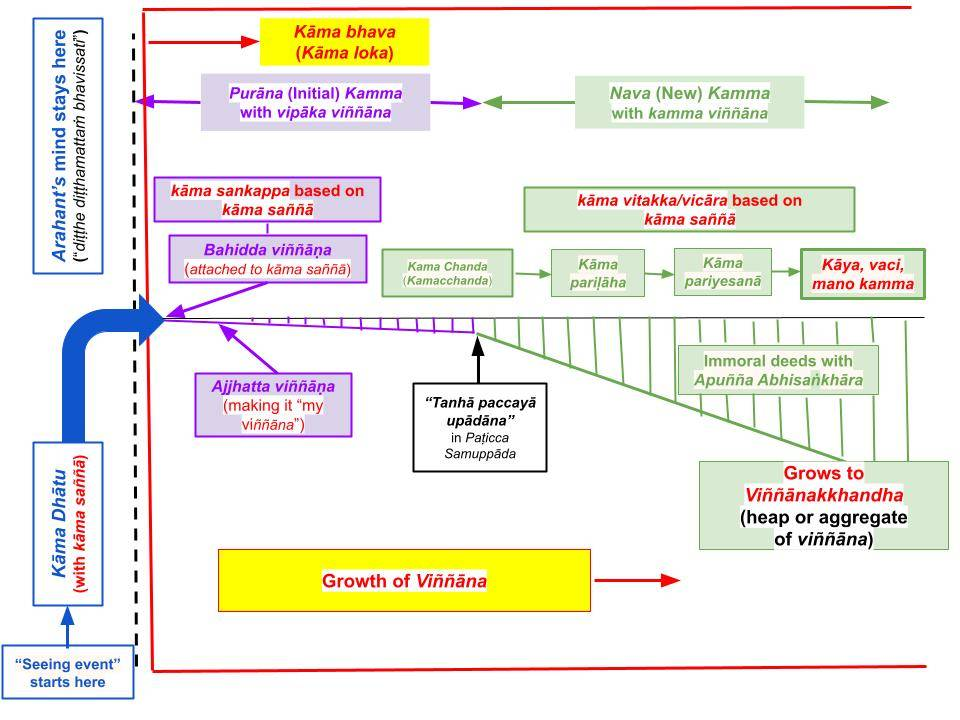
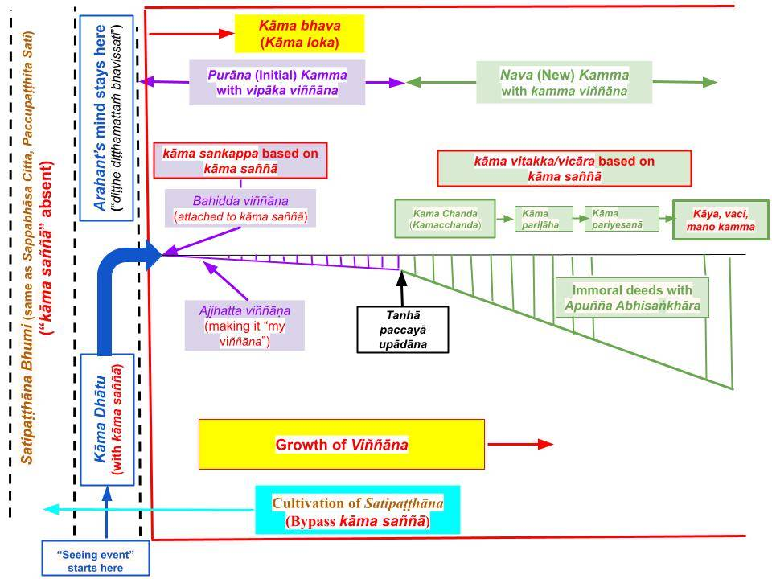

Viññāṇa is more than being aware (i.e., consciousness). Even vipāka viññāṇa arises with attachment to "distorted saññā." Then, if the attachment in the initial vipāka viññāṇa is strong, it grows into a kamma viññāṇa, creating new potent kammic energy. It is necessary to understand this two-step attachment process to cultivate Satipaṭṭhāna Bhāvanā.
May 26, 2017; rewritten April 26, 2025

Download/Print: "Expansion of Viññāṇa"
Viññāṇa Arises With a Sensory Input
1. In deep sleep, our mind is in a "holding state" called "bhavaṅga state." The mind is there but not active, so we are unaware of any sensory inputs.
- Suppose a person wakes up to the sound of an alarm. That is the start of a "sota viññāṇa." It is only a sound that wakes up the mind from its "holding state." It comes in as just a sound, but based on it, he immediately starts thinking about any important events scheduled for today, and then gets ready to go to work.
- Thus, the mind starts with a single sensory experience. But it "expands" rapidly into further thoughts about it and branches into other related areas.
- That is how a narrow initial experience (vipāka viññāṇa) expands and becomes an aggregate or a bundle, called viññāṇakkhandha.
- During that "expansion," the mind may generate kammic energy if it keeps attaching to that initial vipāka viññāṇa and enters the "nava kamma" stage; see the chart above.
- Not everything we see daily leads to the "nava kamma" stage. Furthermore, even though not strong kammic energies are created in the "purāna kamma" stage, the mind gets automatically defiled upon entering the "purāna kamma" stage. We will discuss that below.
2. When a new sensory input comes in, the mind initiates a "new viññāṇa" with a "snapshot" of it.
- Suppose a teenager, X, sees a beautiful woman. It would be a "new viññāṇa." It starts with a snapshot of a woman's figure coming to mind. The chart above shows the critical steps involved.
- The process starts at the "kāma dhātu" stage for anyone born in the kāma loka, including Arahants. The difference between an Arahant and an average human (puthujjana) is the following: While the mind of a puthujjana automatically gets to the "bahiddha viññāṇa," an Arahant's mind remains in the "kāma dhātu" stage.
- Once getting into "kāma loka" with the bahiddha viññāṇa, the mind of a puthujjana will keep attaching at least to the "ajjhatta viññāṇa" stage. If the sensory input is strong (i.e., taṇhā is strong), the incremental attachment continues to the "nava kamma" stage. In Paṭicca Samuppāda, this transition happens at the "taṇhā paccayā upādāna" step.
- Also see "A Sensory Input Triggers (Distorted) Saññā and Pañcupādānakkhandha."
Viññāṇa Can be Moral or Immoral
3. The mind keeps attaching the viññāṇa, which is said to grow because it keeps looking into ways of extending the "pleasure" experienced with the sensory input, in our example of a young boy (X) enjoying the sight of a beautiful woman.
- Up to the "nava kamma" stage, the "growth of viññāṇa" is relatively small, as indicated by the slight slope in the growth of viññāṇa in the above chart. The downward slope is used to indicate an "immoral viññāṇa" ("viññāṇa with kāma raga" in the case of X) that could lead to immoral thoughts, speech, and actions (kāya, vaci, mano kamma in the chart).
- If the sensory input (say the sight of a Buddha statue) leads to good moral thoughts (and possibly moral deeds), a "moral viññāṇa" would result, and two upward lines would indicate that (not shown in the above chart); both types are shown in many other posts including "Sotapanna Stage from Kāma Loka." Even such "moral viññāṇa" moves a mind away from Nibbāna; all viññāṇa, starting with attachment to "distorted saññā," takes a mind away from Nibbāna. See "Six Root Causes – Loka Samudaya (Arising of Suffering) and Loka Nirodhaya (Nibbāna)."
- To move toward Nibbāna, one must overcome the "distorted saññā." We will address that briefly below. It is discussed in detail in “Sotapanna Stage via Understanding Perception (Saññā)” and in even more detail in the “Worldview of the Buddha” section. One needs to set aside a day or two to review these posts; just reading a post or two while eating lunch will not be enough.
Arahants Do Not Generate Viññāṇa
4. As shown in the above chart, the mind of an Arahant will not move to the "bahiddha viññāṇa" inside "kāma loka." Their minds will remain in the "kāma dhātu" state as shown in the above chart.
- An Arahant would not generate viññāṇa at any time. The word "viññāṇa" means "absence of ñāṇa" or "absence of wisdom about the true nature of the world." Specifically, it refers to the absence of knowledge about how the "distorted saññā" triggers the accumulation of kamma; once one comprehends that, one becomes a "sandiṭṭhiko" or a Sotapanna. However, "san generation" completely stops only at the Arahant stage; see "Sandiṭṭhiko – What Does It Mean?"
- If an Arahant does not generate viññāṇa, how would they experience the sensory inputs? The seeing (or eye consciousness) by an Arahant is expressed as “diṭṭhe diṭṭhamattaṁ bhavissati" or "seeing without the arising of any defilements (even though the sight has embedded distorted saññā)." For example, an Arahant would also see a beautiful woman as such (just as X in #2, #3 above); however, since an Arahant fully comprehends that "the beauty of the woman" is a false/distorted saññā generated by the mind, their minds would not attach to that sight.
- This is why the Buddha advised Bāhiya to train to be like an Arahant: “diṭṭhe diṭṭhamattaṁ bhavissati, sute sutamattaṁ bhavissati, mute mutamattaṁ bhavissati, viññāte viññātamattaṁ bhavissatī’ti.” Miraculously, wise Bāhiya understood it within minutes. That was not an accident or a fluke. The “Bāhiya Sutta (Ud 1.10)” is discussed in "‘Diṭṭhe Diṭṭhamattaṁ Bhavissati’ – Connection to Saññā."
Two Types of Viññāṇa Arise Due to "Distorted Saññā"
5. The two types of viññāṇa (as vipāka and kamma viññāṇa) are not categorized as such in the suttās. However, it is easier for us to understand how the mind works by treating how viññāṇa develops from the vipāka viññāṇa stage to the kamma viññāṇa stage (which occurs only if the mind attaches to the ārammaṇa strongly enough to get to the "taṇhā paccayā upādāna" step in Paṭicca Samuppāda). Many suttās discuss the "purāna kamma" and "nava kamma" stages, which correspond to the vipāka viññāṇa and kamma viññāṇa.
- As we discussed in "Free Will in Buddhism – Connection to Sankhāra," we don't have control over the vipāka viññāṇa (in the purāna kamma stage), but we do have control over the potent kamma accumulation with kamma viññāṇa in the nava kamma stage.
- In the post "Is Cakkhu Viññāṇa Free of Defilements?" we discussed why even the vipāka viññāṇa is defiled. Even before we realize it, our minds attach to the "distorted saññā" if unbroken saṁyojanās exist. One has to understand that to become a "sandiṭṭhiko"; see "Sandiṭṭhiko – What Does It Mean?"
- This is why Arahants would not experience even the vipāka viññāṇa! They are conscious and experience sensory inputs like puthujjana. Still, their minds will not attach to the "distorted saññā" because they have broken all ten saṁyojana that bind one to the rebirth process.
- If one or more of the ten saṁyojana remain intact, a mind automatically attaches to that “distorted saññā” without conscious thinking. See #9 of "Saññā – What It Really Means" and "A Sensory Input Triggers (Distorted) Saññā and Pañcupādānakkhandha."
Growth/Expansion of Viññāṇa into Eleven Types
6. Even though the mind starts with a single ārammaṇa (say, X seeing a beautiful woman, in #2 above), it "runs off" in many directions if the sensory input is attractive enough.
- In the example of X, his mind would first recall similar sights he had experienced before; if that woman is known to him, he would unconsciously recall some past experiences with her. Thus, viññāṇa expands to include "past experiences." If he plans to get to know her, viññāṇa would include such future plans. Thus, the viññāṇa will immediately expand (even in the "purāna kamma" stage).
- In fact, viññāṇa includes 11 types: "yaṁ kiñci viññāṇaṁ atītānāgatapaccuppannaṁ ajjhattaṁ vā bahiddhā vā, oḷārikaṁ vā sukhumaṁ vā hīnaṁ vā paṇītaṁ vā yaṁ dūre santike vā,.." See "Adukkhamasukhī Sutta (SN 24.96)." The English translation has many errors, starting with translation of viññāṇa as "cosnciousness."
- In the above verse, atītānāgatapaccuppannaṁ refers to the past (atīta), future (anāgata), and current (paccuppanna) components of the growing viññāṇa.
- Note that the ajjhatta and bahiddha viññāṇa we discussed above are two components of viññāṇa in the above verse (ajjhattaṁ vā bahiddhā vā.) We will discuss all 11 types included in "viññāṇakkhandha," which is simply referred to as "viññāṇa" in many suttās, including the above sutta.
- This is why "viññāṇa" is much more complex than mere "consciousness."
Growth of Viññāṇa Accelerates in the "Nava Kamma" Stage
7. Once a mind strongly attaches to a sensory event (like in the example of X above), we become conscious about thinking, speaking, and taking actions about it. In the example of X, he will start consciously planning how to build a relationship with the woman. That is when the "nava kamma" stage begins, as indicated in the above chart.
- The transition to the "nava kamma" stage starts with the rising of kāmacchanda (kāma chanda or "desire for kāma") in the "purāna kamma" stage.
- The next step of "kāma pariḷāha" means one's mind becomes agitated and asks to "take action" immediately. A sense of urgency arises to take action.
- Then, one would start the investigating (pariyesana) stage. In the case of X, he may start asking others who the woman is and make plans to see her again as soon as possible.
- All those "expand the viññāṇa (which include expectations)" in the "nava kamma" stage, as shown in the chart by the larger slope in the growth of viññāṇa. It culminates with more thoughts (planning), including speech and physical actions. That is indicated by kāya, vaci, and mano kamma in the chart.
- Thus, the initial viññāṇa (which started as just a "seeing event") expands to become a viññāṇakkhandha or a "heap of viññāṇa."
Stopping Viññāṇa Requires Bypassing "Distorted Saññā"
8. It should be apparent from the above discussion that one must bypass the “distorted saññā” to avoid "automatic transition" to (bahiddha) viññāṇa.
- A Sotapanna -- for the first time ever -- overcomes the "distorted saññā” while contemplating the anicca nature of the world.
- When one starts comprehending the origin of the “distorted saññā” (i.e., the Buddha's worldview), one's mind begins to be released from the “distorted saññā" gradually.
- As a Sotapanna Anugāmi, one's mind begins to try to overcome the “distorted saññā” and to move into the "Satipaṭṭhāna Bhumi." This is indicated in the chart below.

Download/Print: "Satipaṭṭhāna - Basic Idea"
First Experience of Sammā Sati (Satipaṭṭhāna Bhumi) Without “Distorted Saññā“
9. A puthujjana experiences the “distorted saññā-free” Sammā Sati (in Satipaṭṭhāna Bhumi) for the first time when attaining the Sotapanna stage. At the Sotapanna phala moment, the mind overcomes the “distorted saññā” associated with the kāma loka (or the “distorted saññā” associated with the rupa loka if in a jhāna) and moves to the Satipaṭṭhāna Bhumi.
- A Sotapanna can “get back to” the Satipaṭṭhāna Bhumi by cultivating Satipaṭṭhāna.
- If a Sotapanna starts cultivating Satipaṭṭhāna, he can return to the Satipaṭṭhāna Bhumi without too much effort (but it is not trivial). With practice, they can get there and stay there to engage in Vipassanā to attain higher magga phala.
- See "Loka and Nibbāna (Aloka) – Complete Overview" for more details.
- I have discussed this critical step in several posts, including "Sensory Inputs Initiate “Creation of the World” or “Loka Samudaya”," "A Sensory Input Triggers (Distorted) Saññā and Pañcupādānakkhandha," and "Kāma Saññā – How to Bypass to Cultivate Satipaṭṭhāna." Reading them is a good idea when there is enough time to contemplate.